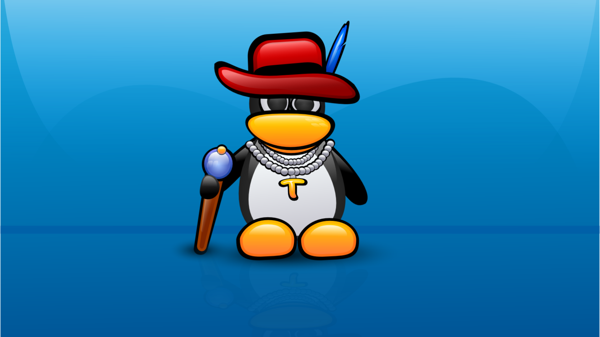

About TUX
maskotka Linuksa, funkcjonująca jako oficjalne logo. Przedstawia ono uśmiechającego się pingwina. Nazwa pochodzi najprawdopodobniej od słów Torvald's Unix. Rysunek Tuksa stworzył w 1996 r. Larry Ewing, korzystając z bezpłatnego programu graficznego GIMP
Tux Gangsta
Charakterystyka
- Nazwa pochodzi os smokingu TUXITO
- Narysowany w GIMPie
- Wysiaduje jaja
Głupoty
Linki do wiki: